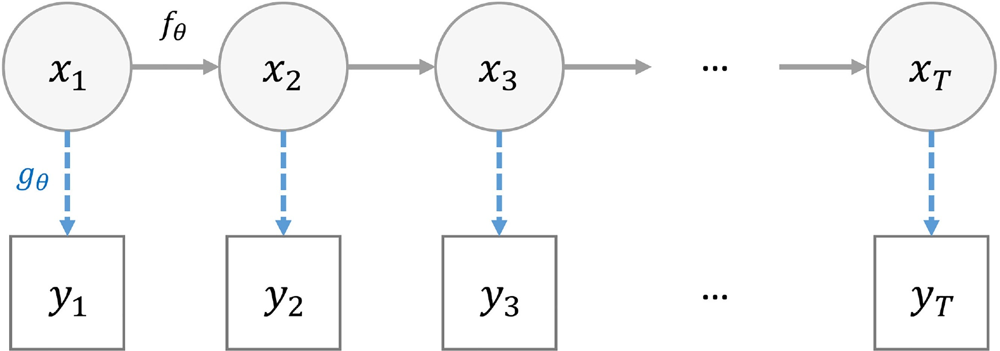
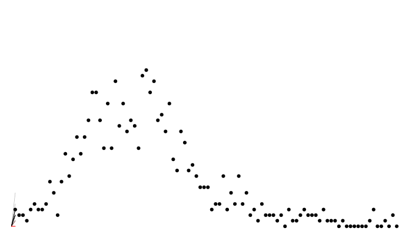
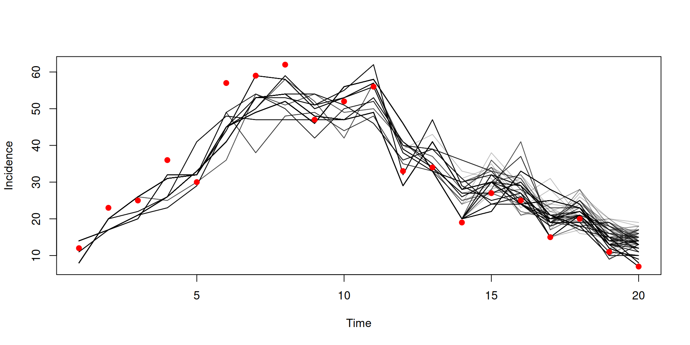
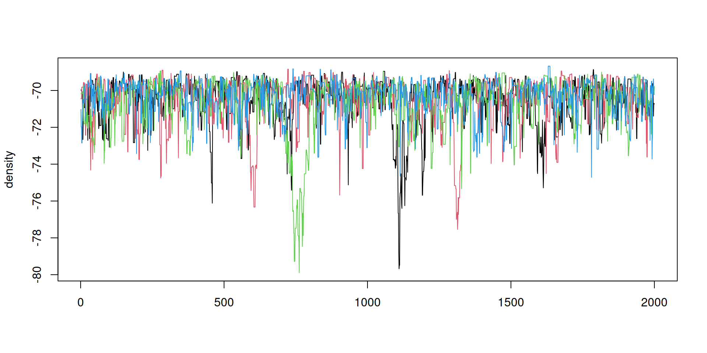
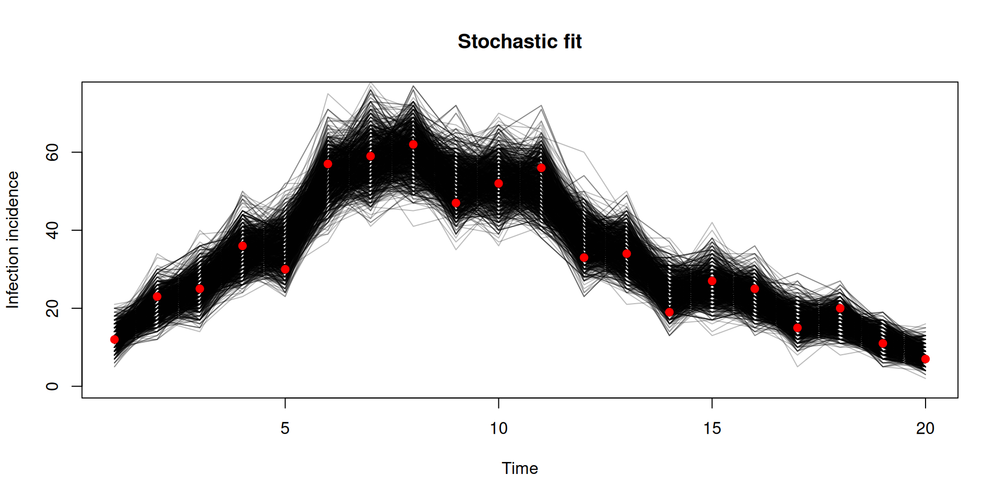
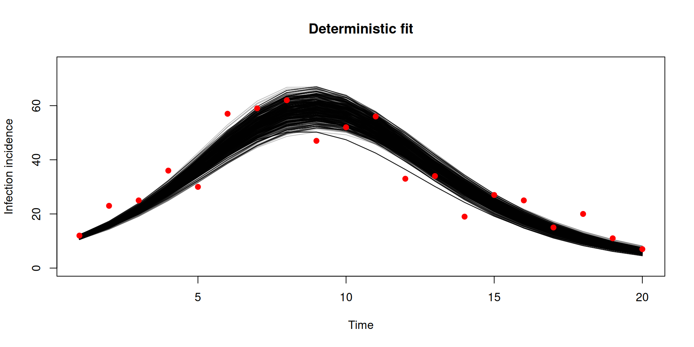
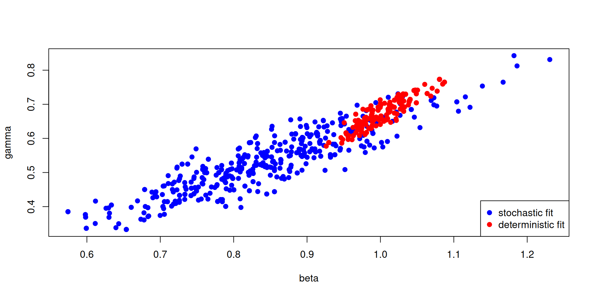
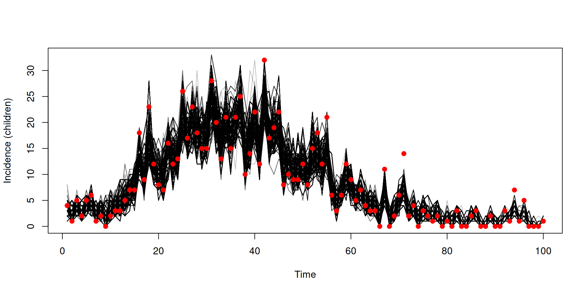
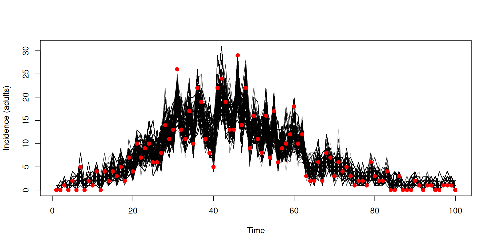

A script containing the code featured in these slides can be downloaded here.
We have some data on the daily incidence of cases (the data can be downloaded here)
We’ll fit these data to a model - estimating the unknown parameters beta and gamma
sir <- odin({
update(S) <- S - n_SI
update(I) <- I + n_SI - n_IR
update(R) <- R + n_IR
update(incidence) <- incidence + n_SI
p_SI <- 1 - exp(-beta * I / N * dt)
p_IR <- 1 - exp(-gamma * dt)
n_SI <- Binomial(S, p_SI)
n_IR <- Binomial(I, p_IR)
initial(S) <- N - I0
initial(I) <- I0
initial(R) <- 0
initial(incidence, zero_every = 1) <- 0
N <- parameter(1000)
I0 <- parameter(10)
beta <- parameter(0.2)
gamma <- parameter(0.1)
})sir <- odin({
update(S) <- S - n_SI
update(I) <- I + n_SI - n_IR
update(R) <- R + n_IR
update(incidence) <- incidence + n_SI
initial(S) <- N - I0
initial(I) <- I0
initial(R) <- 0
initial(incidence, zero_every = 1) <- 0
p_SI <- 1 - exp(-beta * I / N * dt)
p_IR <- 1 - exp(-gamma * dt)
n_SI <- Binomial(S, p_SI)
n_IR <- Binomial(I, p_IR)
N <- parameter(1000)
I0 <- parameter(10)
beta <- parameter(0.2)
gamma <- parameter(0.1)
cases <- data()
cases ~ Poisson(incidence)
})We have added to the model:
We are declaring that
cases is a data variableincidence in the model via a Poisson distributionNote the two types of equations involving distributions:
~ indicates a likelihood relationship<- is for assignments (that can involve random draws)Beyond that syntax for distributions is the same.
In the book: Data
You can use data variables on the RHS as well
and parameters
The distributions supported for likelihoods are the same as those supported for random draws - a full list with their names and parameterisations can be found here.
In the book: Data

AKA, the (bootstrap) particle filter
Assuming a given \(\theta\), at each time step \(t\) it
Allows to efficiently explore the state space by progressively integrating the data points
Produces a Monte Carlo approximation of \(p(Y_{1:T}|\theta)\) the marginal likelihood

dust_likelihood_run(filter, list(beta = 0.4, gamma = 0.2),
save_trajectories = TRUE)
y <- dust_likelihood_last_trajectories(filter)
y <- dust_unpack_state(filter, y)
matplot(data$time, t(y$incidence), type = "l", col = "#00000044", lty = 1,
xlab = "Time", ylab = "Incidence")
points(data, pch = 19, col = "red")
So we have a marginal likelihood estimator from our particle filter
How do we sample from beta and gamma?
We need:
beta and gamma, pars
parspars (and back again)Our solution, “packers”
packer <- monty_packer(c("beta", "gamma"))
packer
#>
#> ── <monty_packer> ──────────────────────────────────────────────────────────────
#> ℹ Packing 2 parameters: 'beta' and 'gamma'
#> ℹ Use '$pack()' to convert from a list to a vector
#> ℹ Use '$unpack()' to convert from a vector to a list
#> ℹ See `?monty_packer()` for more informationWe can transform from \(\theta\) to a named list:
and back the other way:
You can bind fixed parameters by passing them in as a named list as the (optional) fixed argument
Cope with vector- (or array-) parameters in \(\theta\) by declaring their dimensions as a named list passed in as the array argument. Fixed array parameters are just included in fixed.
packer <- monty_packer(c("beta", "gamma"),
array = list(alpha = 3, delta = c(2, 2)),
fixed = list(eta = c(1, 3, 5)))
packer
#>
#> ── <monty_packer> ──────────────────────────────────────────────────────────────
#> ℹ Packing 9 parameters: 'beta', 'gamma', 'alpha[1]', 'alpha[2]', 'alpha[3]', 'delta[1,1]', 'delta[2,1]', 'delta[1,2]', and 'delta[2,2]'
#> ℹ Use '$pack()' to convert from a list to a vector
#> ℹ Use '$unpack()' to convert from a vector to a list
#> ℹ See `?monty_packer()` for more information
packer$unpack(c(0.2, 0.1, 0.31, 0.32, 0.33, 0.15, 0.16, 0.17, 0.18))
#> $beta
#> [1] 0.2
#>
#> $gamma
#> [1] 0.1
#>
#> $alpha
#> [1] 0.31 0.32 0.33
#>
#> $delta
#> [,1] [,2]
#> [1,] 0.15 0.17
#> [2,] 0.16 0.18
#>
#> $eta
#> [1] 1 3 5Working in a Bayesian framework, we will need to construct a prior distribution model for our parameters.
Introducing the monty DSL, similar to odin’s:
The distributions supported in the monty DSL are the same as those in odin2 - a full list with their names and parameterisations can be found here.
In the book: The monty DSL
The monty DSL creates a “monty model”
In the book: The monty DSL
You can see the parameter names of the created model
We can evaluate the (log) density for a given parameter vector (the order of parameters matches the above)
compare with computing this density manually:
In the book: The monty DSL
We can direct sample from the model using a monty_rng object
and evaluate the gradient for a given parameter vector (via automatic differentiation)
Which can be used for Hamiltonian Monte Carlo (HMC) - more support for this in future!
In the book: The monty DSL
In the monty DSL you can have the distribution of one parameter depend upon another
m <- monty_dsl({
a ~ Normal(0, 1)
b ~ Normal(a, 1)
})
m
#>
#> ── <monty_model> ───────────────────────────────────────────────────────────────
#> ℹ Model has 2 parameters: 'a' and 'b'
#> ℹ This model:
#> • can compute gradients
#> • can be directly sampled from
#> • accepts multiple parameters
#> ℹ See `?monty_model()` for more informationIn the book: The monty DSL
Order matters in the monty DSL - you cannot have the distribution of a parameter depend upon one defined later, so switching the order in our previous model results in an error
In the book: The monty DSL
You can use assignments to help make your code more understandable
these can also be used for intermediate calculations
In the book: The monty DSL
You can softcode values by passing them in as a list via fixed, e.g.
can be implemented as
Note that the fixed values cannot be modified after the model object has been created.
In the book: The monty DSL
The monty DSL supports arrays with a similar syntax to odin.
fixed = list(gamma_mean = c(0.3, 0.25, 0.2))
m <- monty_dsl({
alpha ~ Exponential(mean = 0.5)
beta[, ] ~ Normal(0, 1)
gamma[] ~ Exponential(mean = gamma_mean[i])
dim(beta) <- c(2, 2)
dim(gamma, gamma_mean) <- 3
}, fixed = fixed, gradient = FALSE)
m
#>
#> ── <monty_model> ───────────────────────────────────────────────────────────────
#> ℹ Model has 8 parameters: 'alpha', 'beta[1,1]', 'beta[2,1]', 'beta[1,2]', 'beta[2,2]', 'gamma[1]', 'gamma[2]', and 'gamma[3]'
#> ℹ This model:
#> • can be directly sampled from
#> • accepts multiple parameters
#> ℹ See `?monty_model()` for more informationIn the book: The monty DSL
dim() equationi, j etc on LHS - indexing on the LHS is impliciti, j, k, l, i5, i6, i7, i8essentially generates loops
In the book: The monty DSL
For flexibility dimensions can be softcoded and passed in via fixed
fixed = list(gamma_mean = c(0.3, 0.25, 0.2),
n_beta_1 = 2, n_beta_2 = 2, n_gamma = 3)
m <- monty_dsl({
alpha ~ Exponential(mean = 0.5)
beta[, ] ~ Normal(0, 1)
gamma[] ~ Exponential(mean = gamma_mean[i])
dim(beta) <- c(n_beta_1, n_beta_2)
dim(gamma, gamma_mean) <- n_gamma
}, fixed = fixed, gradient = FALSE)
m
#>
#> ── <monty_model> ───────────────────────────────────────────────────────────────
#> ℹ Model has 8 parameters: 'alpha', 'beta[1,1]', 'beta[2,1]', 'beta[1,2]', 'beta[2,2]', 'gamma[1]', 'gamma[2]', and 'gamma[3]'
#> ℹ This model:
#> • can be directly sampled from
#> • accepts multiple parameters
#> ℹ See `?monty_model()` for more informationIn the book: The monty DSL
You can define arrays with multiline equations
but collectively the equations need to define all elements of the array, and each element can only be defined once.
In the book: The monty DSL
Elements of an array can depend upon other elements of the same array that are defined earlier.
We can see that in our previous example
which becomes clearer when we think how the loop will be generated
In the book: The monty DSL
Combine a filter and a packer
packer <- monty_packer(c("beta", "gamma"))
likelihood <- dust_likelihood_monty(filter, packer)
likelihood
#>
#> ── <monty_model> ───────────────────────────────────────────────────────────────
#> ℹ Model has 2 parameters: 'beta' and 'gamma'
#> ℹ This model:
#> • is stochastic
#> ℹ See `?monty_model()` for more informationIn the book: Inference
Combine a likelihood and a prior to make a posterior
\[ \underbrace{\Pr(\theta | \mathrm{data})}_{\mathrm{posterior}} \propto \underbrace{\Pr(\mathrm{data} | \theta)}_\mathrm{likelihood} \times \underbrace{P(\theta)}_{\mathrm{prior}} \]
(remember that addition is multiplication on a log scale)
A diagonal variance-covariance matrix (uncorrelated parameters)
Use this to create a “random walk” sampler:
In the book: Samplers and inference
We will sample 4 chains, each with 1000 steps
samples <- monty_sample(posterior, sampler, 1000, n_chains = 3)
samples
#>
#> ── <monty_samples: 2 parameters x 1000 samples x 3 chains> ─────────────────────
#> ℹ Parameters: 'beta' and 'gamma'
#> ℹ Conversion to other types is possible:
#> → ! posterior::as_draws_array() [package installed, but not loaded]
#> → ! posterior::as_draws_df() [package installed, but not loaded]
#> → ! coda::as.mcmc.list() [package installed, but not loaded]
#> ℹ See `?monty_sample()` and `vignette("samples")` for more informationIn the book: Inference
Diagnostics can be used from the posterior package
## Note: as_draws_df converts samples$pars, and drops anything else in samples
samples_df <- posterior::as_draws_df(samples)
posterior::summarise_draws(samples_df)
#> # A tibble: 2 × 10
#> variable mean median sd mad q5 q95 rhat ess_bulk ess_tail
#> <chr> <dbl> <dbl> <dbl> <dbl> <dbl> <dbl> <dbl> <dbl> <dbl>
#> 1 beta 0.866 0.831 0.153 0.152 0.658 1.15 1.05 50.8 68.8
#> 2 gamma 0.549 0.545 0.119 0.115 0.381 0.728 1.04 50.5 77.1You can use the posterior package in conjunction with bayesplot (and then also ggplot2)

samples_df <- posterior::as_draws_df(samples)
posterior::summarise_draws(samples_df)
#> # A tibble: 2 × 10
#> variable mean median sd mad q5 q95 rhat ess_bulk ess_tail
#> <chr> <dbl> <dbl> <dbl> <dbl> <dbl> <dbl> <dbl> <dbl> <dbl>
#> 1 beta 0.851 0.835 0.131 0.120 0.667 1.09 1.01 338. 388.
#> 2 gamma 0.539 0.524 0.107 0.0944 0.393 0.737 1.00 301. 286.Two places to parallelise
e.g., 4 threads per filter x 2 workers = 8 total cores in use
In the book: Parallelisation
Use the n_threads argument, here for 4 threads
requires that you have OpenMP.
In the book: Parallelisation
Use monty_runner_callr, here for 2 workers
Pass runner through to monty_sample:
In the book: Parallelisation
Then run these chains in parallel on your cluster:
And retrieve the result
In the book: Parallelisation
We look at how to do onward simulation and counterfactuals later.
Trajectories are 4-dimensional
These can get very large quickly - there are two main ways to help reduce this:
You can save a subset via specifying a named vector
After running
monty_sampler_random_walk you can rerun the particle filter at the current parameter set with the aim of calculating a lower estimate
rerun_every sets how often you rerun (rerun_every = 1000 means once every 1000 iterations)rerun_random defines whether this occurs randomly (TRUE) or at fixed intervals (FALSE)The key difference is to use dust_unfilter_create
Note as this is deterministic it produces the same likelihood every time
You should use the same setup if you have an ODE model (which is automatically deterministic)
y <- dust2::dust_unpack_state(filter, samples$observations$trajectories)
incidence <- array(y$incidence, c(20, 1000))
matplot(data$time, incidence, type = "l", lty = 1, col = "#00000044",
xlab = "Time", ylab = "Infection incidence", ylim = c(0, 75),
main = "Stochastic fit")
points(data, pch = 19, col = "red")
y <- dust2::dust_unpack_state(unfilter, samples_det$observations$trajectories)
incidence <- array(y$incidence, c(20, 1000))
matplot(data$time, incidence, type = "l", lty = 1, col = "#00000044",
xlab = "Time", ylab = "Infection incidence", ylim = c(0, 75),
main = "Deterministic fit")
points(data, pch = 19, col = "red")

pars_stochastic <- array(samples$pars, c(2, 500))
pars_deterministic <- array(samples_det$pars, c(2, 500))
plot(pars_stochastic[1, ], pars_stochastic[2, ], ylab = "gamma", xlab = "beta",
pch = 19, col = "blue")
points(pars_deterministic[1, ], pars_deterministic[2, ], pch = 19, col = "red")
legend("bottomright", c("stochastic fit", "deterministic fit"), pch = c(19, 19),
col = c("blue", "red"))
Let’s look at another dataset (the file can be downloaded here)
We’ll fit these data to a model with a piecewise constant beta using interpolate
sir <- odin({
update(S) <- S - n_SI
update(I) <- I + n_SI - n_IR
update(R) <- R + n_IR
update(incidence) <- incidence + n_SI
beta_t <- interpolate(beta_time, beta, "constant")
beta <- parameter()
beta_time <- parameter()
dim(beta, beta_time) <- parameter(rank = 1)
p_SI <- 1 - exp(-beta_t * I / N * dt)
p_IR <- 1 - exp(-gamma * dt)
n_SI <- Binomial(S, p_SI)
n_IR <- Binomial(I, p_IR)
initial(S) <- N - I0
initial(I) <- I0
initial(R) <- 0
initial(incidence, zero_every = 1) <- 0
N <- parameter(1000)
I0 <- parameter(10)
gamma <- parameter(0.1)
cases <- data()
cases ~ Poisson(incidence)
})Let’s create our packer - we’ll fit gamma and 2 values for beta (with changepoints at time = 0 and time = 30)
Let’s create our filter and likelihood model
and create a prior model. then combine to create our posterior model
Combine to create our posterior model
posterior <- likelihood + prior
posterior
#>
#> ── <monty_model> ───────────────────────────────────────────────────────────────
#> ℹ Model has 3 parameters: 'gamma', 'beta[1]', and 'beta[2]'
#> ℹ This model:
#> • can be directly sampled from
#> • is stochastic
#> • has an observer
#> ℹ See `?monty_model()` for more informationCreate a sampler and then sample
Suppose we have some data on the daily incidence of cases by age group (the file can be downloaded here)
Let’s think of the cases data at each time point as a vector of length 2 (for the 2 age groups)
We’ll fit these data to a model with age stratification
sir_age <- odin({
# Equations for transitions between compartments by age group
update(S[]) <- S[i] - n_SI[i]
update(I[]) <- I[i] + n_SI[i] - n_IR[i]
update(R[]) <- R[i] + n_IR[i]
update(incidence[]) <- incidence[i] + n_SI[i]
# Individual probabilities of transition:
p_SI[] <- 1 - exp(-lambda[i] * dt) # S to I
p_IR <- 1 - exp(-gamma * dt) # I to R
# Calculate force of infection
# age-structured contact matrix: m[i, j] is mean number
# of contacts an individual in group i has with an
# individual in group j per time unit
m <- parameter()
# here s_ij[i, j] gives the mean number of contacts an
# individual in group i will have with the currently
# infectious individuals of group j
s_ij[, ] <- m[i, j] * I[j]
# lambda[i] is the total force of infection on an
# individual in group i
lambda[] <- beta * sum(s_ij[i, ])
# Draws from binomial distributions for numbers
# changing between compartments:
n_SI[] <- Binomial(S[i], p_SI[i])
n_IR[] <- Binomial(I[i], p_IR)
initial(S[]) <- S0[i]
initial(I[]) <- I0[i]
initial(R[]) <- 0
initial(incidence[], zero_every = 1) <- 0
S0 <- parameter()
I0 <- parameter()
beta <- parameter(0.2)
gamma <- parameter(0.1)
n_age <- parameter()
dim(S, S0, n_SI, p_SI, incidence) <- n_age
dim(I, I0, n_IR) <- n_age
dim(R) <- n_age
dim(m, s_ij) <- c(n_age, n_age)
dim(lambda) <- n_age
## Likelihood
cases <- data()
dim(cases) <- n_age
cases[] ~ Poisson(incidence[i])
})We are treating the data cases as a vector that relates to incidence from the model
dim() equationsIn the book: Data
Normally, you could setup a data.frame by writing:
Array data can be handled with a list-column.
For a list-column you pass in a list with the same number of elements as there are rows, with each list element being an array of the right size
Note we need to wrap with I()!
In the book: Data
Let’s convert our case columns to a single list-column (and then drop the separated case columns)
Let’s create our packer - we’ll fit beta and gamma and assume we know everything else
Let’s create our filter and likelihood model
and create a prior model, then combine to create our posterior model
Create a sampler and then sample
y <- dust_unpack_state(filter, samples$observations$trajectories)
incidence <- array(y$incidence, c(2, 100, 2000))
matplot(data_age$time, incidence[1, , ], type = "l", col = "#00000044", lty = 1,
xlab = "Time", ylab = "Incidence (children)")
cases_children <- vapply(data_age$cases, "[[", numeric(1), "cases_children")
points(data_age$time, cases_children, pch = 19, col = "red")
matplot(data_age$time, incidence[2, , ], type = "l", col = "#00000044", lty = 1,
xlab = "Time", ylab = "Incidence (adults)")
cases_adult <- vapply(data_age$cases, "[[", numeric(1), "cases_adult")
points(data_age$time, cases_adult, pch = 19, col = "red")

Let’s use some new data
In the book: Projections and counterfactuals
We’ll fit the data to an SIS model incorporating schools opening/closing
sis <- odin({
update(S) <- S - n_SI + n_IS
update(I) <- I + n_SI - n_IS
update(incidence) <- incidence + n_SI
initial(S) <- N - I0
initial(I) <- I0
initial(incidence, zero_every = 1) <- 0
schools <- interpolate(schools_time, schools_open, "constant")
schools_time <- parameter()
schools_open <- parameter()
dim(schools_time, schools_open) <- parameter(rank = 1)
beta <- ((1 - schools) * (1 - schools_modifier) + schools) * beta0
p_SI <- 1 - exp(-beta * I / N * dt)
p_IS <- 1 - exp(-gamma * dt)
n_SI <- Binomial(S, p_SI)
n_IS <- Binomial(I, p_IS)
N <- parameter(1000)
I0 <- parameter(10)
beta0 <- parameter(0.2)
gamma <- parameter(0.1)
schools_modifier <- parameter(0.6)
cases <- data()
cases ~ Poisson(incidence)
})In the book: Projections and counterfactuals
We will
In the book: Projections and counterfactuals
packer <- monty_packer(c("beta0", "gamma", "schools_modifier"),
fixed = list(schools_time = schools_time,
schools_open = schools_open))
data <- dust_filter_data(data, time = "time")
filter <- dust_filter_create(sis, time_start = 0, dt = 0.25,
data = data, n_particles = 200)
prior <- monty_dsl({
beta0 ~ Exponential(mean = 0.3)
gamma ~ Exponential(mean = 0.1)
schools_modifier ~ Uniform(0, 1)
})
vcv <- diag(c(2e-4, 2e-4, 4e-4))
sampler <- monty_sampler_random_walk(vcv)In the book: Projections and counterfactuals
We want to save the end state, and a snapshot at day 60 (where the counterfactual will diverge)
likelihood <- dust_likelihood_monty(filter, packer, save_trajectories = TRUE,
save_state = TRUE, save_snapshots = 60)
posterior <- likelihood + prior
samples <- monty_sample(posterior, sampler, 500, initial = c(0.3, 0.1, 0.5),
n_chains = 4)
samples <- monty_samples_thin(samples, burnin = 100, thinning_factor = 8)In the book: Projections and counterfactuals
In the book: Projections and counterfactuals
state <- array(samples$observations$state, c(3, 200))
pars <- array(samples$pars, c(3, 200))
pars <- lapply(seq_len(200), function(i) packer$unpack(pars[, i]))
sys <- dust_system_create(sis, pars, n_groups = length(pars), dt = 1)
dust_system_set_state(sys, state)
t <- seq(150, 200)
y <- dust_system_simulate(sys, t)
y <- dust_unpack_state(sys, y)In the book: Projections and counterfactuals
In the book: Projections and counterfactuals
snapshot <- array(samples$observations$snapshots, c(3, 200))
pars <- array(samples$pars, c(3, 200))
f <- function(i) {
p <- packer$unpack(pars[, i])
p$schools_time <- c(0, 50, 130, 170, 180)
p$schools_open <- c(1, 0, 1, 0, 1)
p
}
pars <- lapply(seq_len(200), f)
sys <- dust_system_create(sis, pars, n_groups = length(pars), dt = 1)
dust_system_set_state(sys, snapshot)
t <- seq(60, 150)
y <- dust_system_simulate(sys, t)
y <- dust_unpack_state(sys, y)In the book: Projections and counterfactuals
In the book: Projections and counterfactuals
Try different samplers
Some under development to support odin models